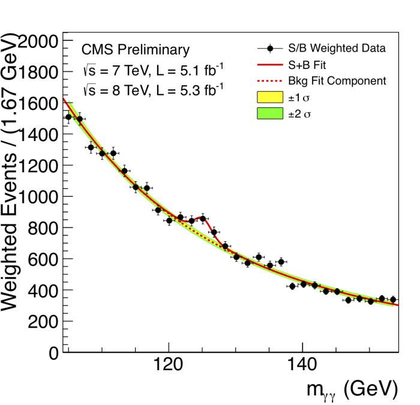

Resonances
Resonances
How could you "detect" a new subatomic particle, given that it's so small you can't see it and (often) so short-lived that you'd miss it even if you didn't blink?
Let's suppose you have a process which you think might involve your tiny, short-lived new friends. Maybe you suspect that if you smash protons together, you might produce some particles… which decay into particles… which decay into the particles you're looking for… which then themselves decay almost immediately into something else, something that is more stable and easier to detect (something like a pair of photons). How could you check that you were right?
First, you have to remember that in quantum field theory, thinking in terms of particles is only an approximation of what happens on a subatomic level. Instead, there is a collection of fields (electron fields, photon fields,…) and what we think of as "particles" are localised excitations of those fields. Moreover, at any given time, the field doesn't have to be in any definite configuration – it is a messy quantum superposition of different configurations, in which there are seven photons and a million photons and no photons, all at the same time (amongst infinitely many other things). You can imagine this as a C major chord played on the piano: you get a "note" which is neither C nor E nor G, but rather a combination of all of these with different amplitudes depending on how hard you pressed the different keys; you shouldn't really think of it as a note at all, because it's a chord – a superposition of different notes.
Second, you have to remember that in quantum field theory, the final measurement you make only sees one of these constituent configurations. When you make a measurement, you will detect a single configuration, but each time you repeat the experiment and make the measurement you could get a different answer. The amplitude of one of the constituent configurations in the state of the field governs the probability with which your measurement results in observing that particular configuration.
So when you're smashing protons together, if you're interested in processes that create photon pairs, the only thing you can measure as an experimenter is the probability that a photon pair is produced. There is a remarkable calculus for computing these probabilities: the technique of Feynman diagrams.
- Start with two incoming protons and two outgoing photons.
- Imagine all the possible particle processes that could interpolate between them: e.g. protons collide and produce an intermediate particle which decays into two photons; or two protons collide and produce an intermediate particle which decays into a bunch of intermediate particles which collide amongst one another and produce two photons; … or any of an infinite number of possible, ever-more-complicated processes! These intermediate particles are called "virtual particles" because they're only really there for computational convenience.
- Assign to each of these processes a number using the "Feynman rules". Sum up the numbers. This gives the probability that two protons can collide and eventually produce two photons.
So, even though particles are slightly fictitious on this quantum level, thinking in terms of virtual particle processes gives a very good approximation of what is going on.
Now, you suspect that your favourite new particles contribute to this whole story because they should be involved in one of the (infinitely many) intermediate processes which is taken into account by the Feynman calculus. So the big questions are: how would the existence of a new particle affect the probabilities you can measure, and how could you infer more information about the new particle (like its mass) from these probabilities?
To understand this, we must look a little deeper at the Feynman rules.
When we compute the contribution of a particular process to the total probability, we look at all of the virtual particles which are involved in the process, and we include a factor like \(1/(E^2-m^2c^4)\) (the precise factor depends on the virtual particles involved). This factor is called the Feynman propagator; \(m\) is the mass of the virtual particle, \(E\) is the energy of the virtual particle in its rest frame and \(c\) is the speed of light. The strange thing is that relativity tells us that \(E=mc^2\), so this propagator should be \(1/0\), which is infinitely large. However, virtual particles do not need to obey \(E=mc^2\). Particles which obey \(E=mc^2\) are said to be "on-shell"; otherwise they are "off-shell". Importantly, the value of \(E\) for a virtual particle depends on the energy at which the original protons collided.
The outcome of this is that virtual processes involving particles which violate \(E=mc^2\) by a large margin are not very likely (their contribution to the probability calculation is suppressed by the large denominator in the Feynman propagator). But it could be that for your favorite virtual process, a particular choice of collision energies results in your favourite virtual particle coming close to "on-shell"; suddenly the contribution of this process to the overall probability of photon pair-production becomes large, and you see an "excess of events" at that energy. This is called a resonance – the energy is precisely calibrated to increase the likelihood that your virtual particles are created.
This allows you to separate out different virtual processes from the morass of things that can actually occur: you look at different collision energies, repeat the collision many many times, and plot the energy (horizontally) against the number of photon-pairs being produced (vertically). At certain energies you will see a "bump" in the probability, which indicates that there is a virtual process happening with high probability, and that the mass of the virtual particle involved is resonant with the energy at which the incoming particles are colliding.
The following image shows a bump in the diphoton channel caused by the Higgs boson (detected by the CMS experiment in the Large Hadron Collider at CERN. Image (C) Copyright CERN (2008-2014)).

Because you're interested in production of photon pairs, this would be called a diphoton bump, or a resonance in the diphoton channel. Of course, most particles are involved in many different channels (e.g. dilepton), so you could look at something other than photon pair production. If you find a resonance with a particular mass contributing to many different channels then the likelihood is, you've found a particle with that mass. Well done!
I have oversimplified everything rather drastically here: actual computations with Feynman diagrams, the technical difficulty in making particles collide together at high energies, the small probabilities involved, the huge number of times the experiment must be performed, and the statistical difficulty of looking for meaningful bumps from a vast sea of data – all of these are things I have said nothing about. But this idea of looking for and explaining resonances has been behind many of the exciting particle discoveries that people have made (like Z bosons and Higgs bosons).
[Disclaimer: I am not a particle physicist, and the above is just my best understanding of what's going on. I have been teaching myself some quantum field theory and, as a mathematician, it's easy to get carried away with the gorgeous but complicated formalism. When I realised that the small, on-shell, denominators in Feynman propagators are responsible for detectable bumps, it was a nice way to connect what I was learning back to reality, so I decided to write a blog post about it.]